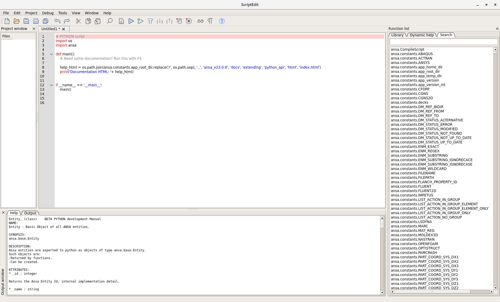

10 Minutes to ANSA API#
This is a short introduction to the ANSA API, geared mainly for new users. If you want to dive into all the details, you can read the complete Interacting with ANSA.
Script Editor#
Whether you are an experienced developer or a beginner to the field of programming, the Script Editor is going to be a good friend of yours, for at least your first couple of experiments with the ANSA API. Although it’s mainly designed as a playground for simple python scripts, the Script Editor is a complete editing environment attached directly to the ANSA core functionality, while offering very useful search and documentation help features. In order to access the Script Editor from ANSA, press the menu button Tools –> Script –> Script Editor. The Script Editor window will open and you can either start editing a new file or open an already existing one, by using the respective options from the File menu.
A new file on the Script Editor will look as the following:

The main part of the window is the editor, where specific python and ANSA API keywords are highlighted, while on the right side lies the Search toolbar. By double clicking on a selected function from the list, the respective help text appears on the bottom of the screen, on the Help window, or by right clicking, the function is written on the current file. When you press the Run button, the code will be executed and all the appropriate messages will appear on the Output window.
You can read more info on how to use the Script Editor.
Modules#
The ANSA API consists of a series of functions and classes that interact directly with the ANSA interface. These are divided in distinct modules, separating the different functionalities of the respective components contained in each one. Every module needs to be imported prior to using its functions and classes.
The fundamental module of ANSA is the ansa.base module, which contains all the functions and classes responsible for topo, deck, visibility and element data manipulation. While using the base module, the ansa.constants module is very commonly needed, as it contains a collection of all the ANSA constants and reserved methods, such as the deck constants for all the available decks.
The deck constants can be simply accessed as shown on the following example:
from ansa import constants
constants.NASTRAN
constants.ABAQUS
Access Data in ANSA#
The ANSA Entity#
Every entity of the ANSA Database, whether it’s a Node, an Element, a Property or even a Connection, is actually an object of the class ansa.base.Entity. This means that all of these objects share the same state and behavior, as defined from the ansa.base.Entity class that they belong to. Such objects can be directly created through scripting, or already existing ones can be retrieved, by using the appropriate functions.
Some of their commonly used read only attributes are the following:
- _id
Returns the ANSA Entity id.
- _name
Returns the ANSA Entity name.
- _comment
Returns the ANSA Entity comment.
and an attribute that can also be modified:
- position
Directly get and set global x,y,z coordinates for point-like Entities.
So for example, getting a node’s id and name is as simple as that:
name = node._name
nid = node._id
While in order to change its position, we can directly assign it a tuple containing 3 values:
print(node.position) # Prints the current node's position
node.position = (6,7,4) # Set the node's coordinates to x=6, y=7, z=4
Some of the commonly used methods they share are the following:
- Entity(deck, id, type, facet, edge_index)
Entity object constructor; Returns the created Entity object.
- ansa_type(deck)
Returns the ANSA type of the entity in the specified deck.
- card_fields(deck)
Returns a list with the names of all the active card fields.
- get_entity_values(deck, fields)
et values from the entity using the edit card’s field names. This method returns directly the entity objects for the fields that reference Entity objects. The fields argument is a list containing the names of the card field labels to extract the values from.
- set_entity_values(deck, fields)
Set or change values of the entity using its Edit Card Fields. Returns zero on success, non zero on error. The fields argument is a dictionary with keys the name of the ANSA card labels and values the desired card field values. By using this method, it is possible to set an entity object as a value for a respective field.
Some of the above functions refer to the entity’s edit card and its card fields’ labels, which we will immediately analyse.
ANSA Entities edit cards#
Most of the entities in ANSA have a card that includes all the necessary information regarding them. The type of each entity is very important, since it is the keyword that must be used in order to have access to the card and its contents. The entity’s type is displayed on the card’s window header, enclosed in brackets. For example, a NASTRAN “shell” has a card with type SHELL and this is the keyword that must be used when dealing with this kind of entity, while on the other hand, an LS-DYNA “shell” has a card with type ELEMENT_SHELL. The labels of the card fields are also important, since they must be used in order to obtain or change their values.

So, a simple use of the previously presented methods of the ansa.base.Entity class would look like this on a shell element entity:
# Returns the type of the element on NASTRAN.
ansa_type = elem.ansa_type(constants.NASTRAN)
print('The type of the element:', ansa_type)
# Returns a list with all the active fields of the edit card.
card_fields = elem.card_fields(constants.NASTRAN)
print('All the active card fields:', card_fields)
# Retrieve the element's type, PID and Grid Points on a dictionary.
elem_fields = elem.get_entity_values(constants.NASTRAN, ('type', 'PID', 'G1', 'G2', 'G3', 'G4'))
print('The returned dictionary:', elem_fields)
# Set a different Property ID.
elem.set_entity_values(constants.NASTRAN, {'PID': 300})
Retrieving Entities#
There are various ways to retrieve entities from the ANSA Database, with the most common of them being the functions ansa.base.CollectEntities() and ansa.base.NameToEnts(), for massive collection, and ansa.base.GetEntity() for retrieving a single entity, provided its id.
Massive collection of Entities#
One of the advantages of the ansa.base.CollectEntities() function is that it can be used for finding entities that are used by other container-entities, while it’s also the only function that can collect visible entities. Its syntax is very flexible and can accept either lists/tuples or single elements, while a variable number of input arguments can be specified as well. Its required parameters are the desired deck, the container where the function will search in, and finally the search types to be collected.
Let’s see the capabilities of this function with some examples.
import ansa
from ansa import base
from ansa import constants
def main():
# Define the keywords of the entities that you want to collect in a tuple.
# These keywords are taken from the title of their cards.
search_types = ('PSHELL', 'PSOLID')
ents = base.CollectEntities(constants.NASTRAN, None, search_types)
print('Number of entities collected:', len(ents))
In this approach the search types are more than one, thus they are passed to the function as a tuple. The second argument of the function, which indicates the container to search in, is set to None, in order for the function to collect entities from the whole database. The output of the function is a list that contains the objects of PSHELLs and PSOLIDs of the database.
If you want to collect all the properties or all the materials of the database, a string indicating the entity category should be used:
def main():
all_props = base.CollectEntities(constants.NASTRAN, None, '__PROPERTIES__')
print('Number of properties collected:', len(all_props))
all_mats = base.CollectEntities(constants.NASTRAN, None, '__MATERIALS__')
print('Number of materials collected:', len(all_mats))
Now suppose that you want to collect only the GRIDs that are used from SHELLs. In this case you don’t want to search for GRIDs on the whole database, but only on the existing SHELLs. In order to accomplish that, first you need to collect all the SHELLs and then collect all the GRIDs, providing the SHELLs collected as the container argument. Keep in mind that a container can either be a list or a single object.
def main():
# First collect the shells of the whole database.
shells = base.CollectEntities(constants.NASTRAN, None, "SHELL")
print('Number of shells:', len(shells))
# Then collect the grids of these shells.
grids = base.CollectEntities(constants.NASTRAN, shells, "GRID")
print('Number of grids used from shells:', len(grids))
The third argument that defines the type of entities, can also accept some special keywords. One of those is the keyword “__ALL_ENTITIES__”, which can be used to collect all the entities that are included into a superior entity. This makes sense in SETs, PARTs, Connections, etc.
def main():
# Collect the sets of the database
sets = base.CollectEntities(constants.NASTRAN, None, 'SET')
print('Number of sets:', len(sets))
# Collect all the entities that belong to these sets
ents = base.CollectEntities(constants.NASTRAN, sets, '__ALL_ENTITIES__')
print('Number of entities in sets:', len(ents))
Another useful capability of the function ansa.base.CollectEntities() is collecting visible entities. This is made possible by setting the ‘filter_visible’ argument to True, as shown below:
def main():
shells = base.CollectEntities(constants.NASTRAN, None, 'SHELL', filter_visible=True)
print('Number of visible shells:', len(shells))
As a more complete example, suppose we want to create a function that finds all the nodes with x coordinate less than a given value and renames them as: “NODE WITH ID: <id> AND XCOORD: <xcoord>”. In order to accomplish that we need to use the functions ansa.base.CollectEntities() and ansa.base.Entity.set_entity_values():
from ansa import base
from ansa import constants
def rename_nodes(val):
# Collect all nodes
nodes = base.CollectEntities(constants.NASTRAN, None, 'GRID')
nodes_list = []
for node in nodes:
if node.position[0] < val:
nodes_list.append(node)
name = 'NODE WITH ID: %d AND XCOORD: %.5f' % (node._id, node.position[0])
node.set_entity_values(constants.NASTRAN, {'Name': name})
print('Number of nodes with x coordinate less than %d: %s' % (val, len(nodes_list)))
return nodes_list
Collect Entities according to their names#
Apart from ids, names can also be used as searching keywords for collecting any type of entities. The function that pulls this process off, is the ansa.base.NameToEnts(), which takes an argument containing the search pattern, also accepting Perl regular expressions, and two more optional arguments containing the deck and the search mode. It returns a list containing references to all entities with successful name matches. This function is mostly used in combination with the ansa.base.Entity.ansa_type() in order to distinguish the type of entities.
In the following example, suppose that the whole database must be searched in order to collect and store any PSHELLs and PSOLIDs whose name starts with “Default”.
def main():
# Collect entities that satisfy the searching pattern
ents = base.NameToEnts("^Default.*")
if not ents:
print('No entities were found.')
return
pshells = []
psolids = []
for ent in ents:
# Distinguish the type of entity
if ent.ansa_type(constants.NASTRAN) == 'PSHELL':
pshells.append(ent)
if ent.ansa_type(constants.NASTRAN) == 'PSOLID':
psolids.append(ent)
print('The collected PSHELLS:', pshells)
print('The collected PSOLIDS:', psolids)
Get a single Entity#
In order to get a single object of an entity, the function ansa.base.GetEntity() can be used. The type and the id of the entity are required, in order to get a reference to the object of the entity.
def GetSingleEntity():
node = base.GetEntity(constants.NASTRAN, 'GRID', 100)
print('The retrieved node:', node._id)
In the above example, a GRID object with id 100 is returned.
The type is not necessarily needed if the function is used for getting properties, materials or model browser containers. In that case, instead of the entity type, the keywords “__MATERIALS__”, “__PROPERTIES__” or “__MBCONTAINERS__” can be used.
def main():
prop = base.GetEntity(constants.NASTRAN, '__PROPERTIES__', 10)
mat = base.GetEntity(constants.NASTRAN, '__MATERIALS__', 10)
mb = base.GetEntity(constants.NASTRAN, '__MBCONTAINERS__', 10)
Note
The ansa.base.GetEntity() function cannot collect ANSAPARTS and ANSAGROUPS from the PART MANAGER through their Module Id. Instead the function ansa.base.GetPartFromModuleId() has to be used.
Create Entities#
Apart from retrieving already existing entities, the ANSA API can also be used to create new entities like nodes, properties, materials etc. The function that can be used for this purpose is the ansa.base.CreateEntity(). It is necessary to declare the entity type keyword and a dictionary containing pairs of labels – values, in order to get a reference to the newly created entity.
def CreateGrid():
fields = {'X1': 3.5, 'X2': 10.8, 'X3': 246.7}
new_grid = base.CreateEntity(constants.NASTRAN, 'GRID', fields)
print('The id of the new grid:', new_grid._id)
During the creation of an entity, all the fields that are necessary for its definition but are not specified by the user (e.g. the id) are automatically filled by ANSA.
Note
Not all entities of ANSA can be created by using the ansa.base.CreateEntity() function. Some of them demand the use of specific functions like ansa.base.NewPart(), ansa.base.NewGroup(), etc.
Organize Data in containers#
After creating or collecting ANSA entities/data, it is very commonly needed to organize them in containers such as a Set, a Part, a Group or an Include, in order to easily retrieve them or massively apply to them a series of operations.
Following, are some examples of using the aforementioned containers in quite plain scenarios.
Model Browser - Parts, Groups#
The Model Browser is a GUI window where the user can see all the existing Groups and Parts, with all the Entities that are contained in them. In order to create a new group or a new part, the functions ansa.base.NewGroup() and ansa.base.NewPart() have to be used. Moreover, in order to add data in a part or even add a part in a group, the function ansa.base.SetEntityPart() has to be used.
Suppose we want to create a group named ‘foo’, which contains a part named ‘bar’ and add to it any number of elements that the user is able to pick from the ANSA interface. The following example demonstrates how this can be accomplished:
import ansa
from ansa import base
def main():
# Let the user pick the elements from the interface
elems = base.PickEntities(0, '__ELEMENTS__')
print('Number of elements picked:', len(elems))
# Create the group and the part
group = base.NewGroup('foo')
part = base.NewPart('bar')
# Add the part to the group
base.SetEntityPart(part, group)
# Add the elements to the part
base.SetEntityPart(elems, part)
Includes Manager#
The Includes Manager handles all the Include Entities of the database, similar to the Model Browser and the Parts. An Include can be created by using the function ansa.base.CreateEntity() and entities can be added to any include by using the function ansa.base.AddToInclude().
As an example we can create an Include and add some elements in it:
import ansa
from ansa import base
def main():
elems = base.PickEntities(0, '__ELEMENTS__')
print('Number of elements picked:', elems)
# Create the include entity
include = base.CreateEntity(0, 'INCLUDE')
print('The created Include:', include._id)
# Add the elements to the include
base.AddToInclude(include, elems)
Sets#
A set is an Entity which can hold any kind of ANSA Entities, in order to organize these data or massively apply operations on them. In order to create a set, the function ansa.base.CreateEntity() has to be used and in order to add entities in it, the function ansa.base.AddToSet() has to be used.
A plain example where adding a property into a newly created set is shown below:
import ansa
from ansa import base
from ansa import constants
def main():
# Retrieve the Property
prop = base.GetEntity(constants.NASTRAN, '__PROPERTIES__', 600)
# Create a set
my_set = base.CreateEntity(constants.NASTRAN, 'SET', {'Name': 'SetWithProp'})
print('The created Set:', my_set._id)
# Add the property to the set
base.AddToSet(my_set, prop)
Note
If you are trying to create a set with the same name as an already existing one, the function ansa.base.CreateEntity() will return None. That’s because sets in ANSA are identified by their unique name and not by an id, as many other ANSA entities. In order to make sure that the set is always created, the following function can be implemented, which appends an increasing number at the end of the set name:
import ansa
from ansa import base
from ansa import constants
def create_set(name):
my_set = base.CreateEntity(constants.NASTRAN, 'SET', {'Name': name})
n = 1
while not my_set:
my_set = base.CreateEntity(constants.NASTRAN, 'SET', {'Name': name + str(n)})
n += 1
return my_set
Complete Example#
To complete this tutorial, let’s see an example that combines some of the aforementioned API functions.
Suppose that firstly, we want to find all the nodes with x coordinate less than 1600 and rename them accordingly, as shown in a previous example. Then, we want to add all these identified nodes to a set named ‘MyTempSet’, but also make sure that this set is always created (avoid naming conflicts).
import ansa
from ansa import base
from ansa import constants
def _create_set(name):
my_set = base.CreateEntity(constants.NASTRAN, 'SET', {'Name': name})
n = 1
while not my_set:
my_set = base.CreateEntity(constants.NASTRAN, 'SET', {'Name': name + str(n)})
n += 1
return my_set
def _rename_nodes(val):
nodes = base.CollectEntities(constants.NASTRAN, None, 'GRID')
nodes_list = []
for node in nodes:
if node.position[0] < val:
nodes_list.append(node)
name = 'NODE WITH ID: %d AND XCOORD: %.5f' % (node._id, node.position[0])
node.set_entity_values(constants.NASTRAN, {'Name': name})
return nodes_list
def main():
nodes = _rename_nodes(1600)
my_set = _create_set('MyTempSet')
base.AddToSet(my_set, nodes)
Note that we provide a list with all the nodes to the function ansa.base.AddToSet(). It is much faster to collect all the Entity objects into a list and call the function just once, in contrast to calling the function multiple times for every single Entity object.
Generally, functions that accept either a single entity or a list of entities, are working a lot faster when provided a list of Entity objects and called just once. You can read more tips on how to optimize your code Code optimization.
Note
Keep in mind that this is just a short introduction to the ANSA API and you can always read the complete guitk Module.